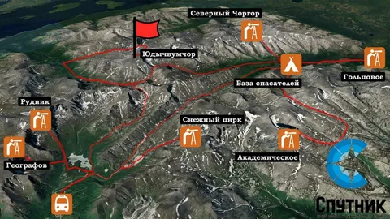
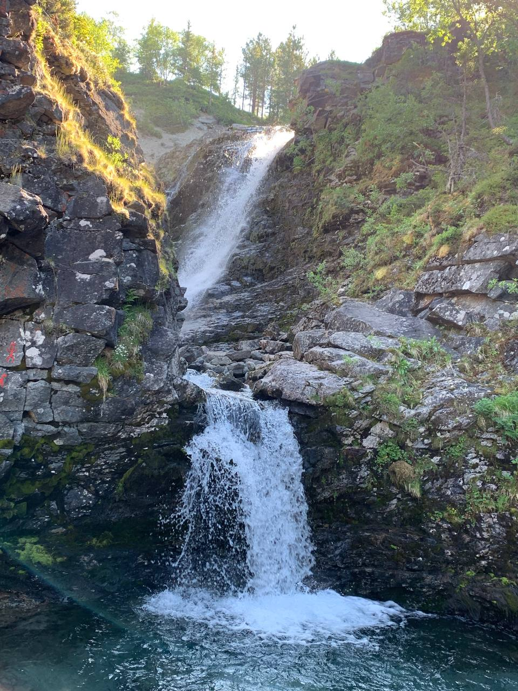
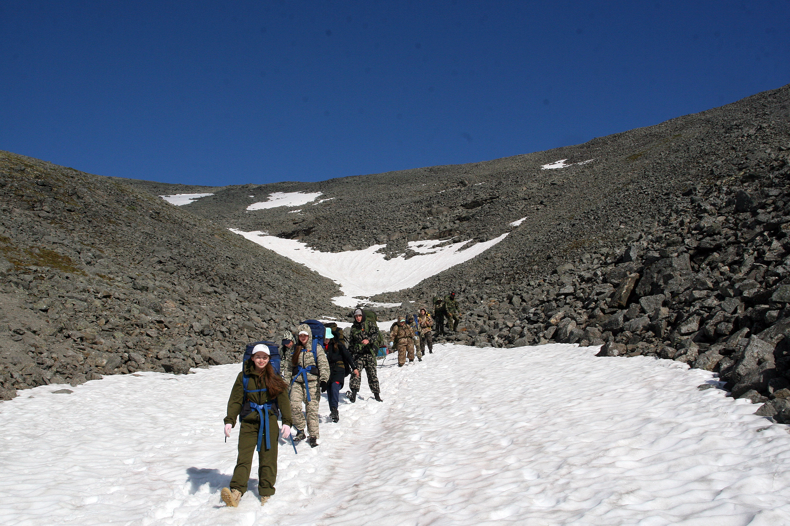
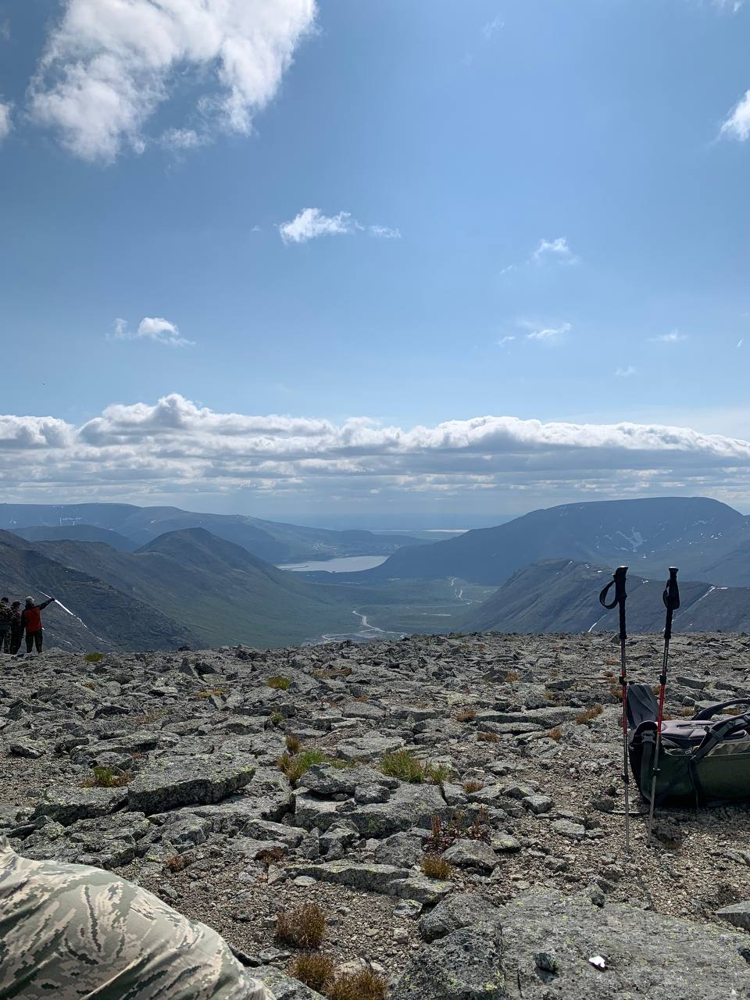

Хибины встретили нашу группу суровыми каменными осыпями, пронзительным ветром и заснеженными перевалами, которые не тают даже посреди лета. Это был категорийный маршрут, проверивший на прочность не только экипировку, но и командный дух.
Разработка и нитка маршрута
Прохождение ключевых долин, базовых лагерей спасателей и штурм плато Юдычвумчорр требовали четкой логистики. Карта стала нашим главным путеводителем в условиях изменчивой полярной погоды, где каждый перевал диктует свои правила прохождения.

Атмосфера Заполярья
За один ходовой день здесь можно пережить проливной дождь, плотный туман-молоко на плато и яркое солнце. Потоки ледяной воды срываются со скал, образуя оглушительные бурные водопады, которые оживляют строгий и молчаливый пейзаж заполярных ущелий.

Переходы по снежникам
Летние снежники Хибин требуют максимальной концентрации, слаженной командной работы и уверенного шага. Каменистые осыпи под ногами заставляют контролировать каждое движение. В редкие минуты отдыха мы вели сверку навигации и заполняли полевой дневник.

Выход на плато
Каменистые плато открывают потрясающие виды на бескрайние просторы Кольского полуострова. Границы между небом и землей стираются, а чистый горный воздух и преодоление сложного подъема дают мощный заряд энергии для будущих дорог.
